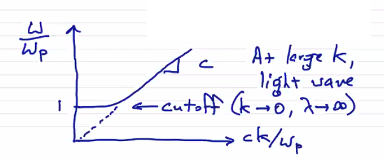
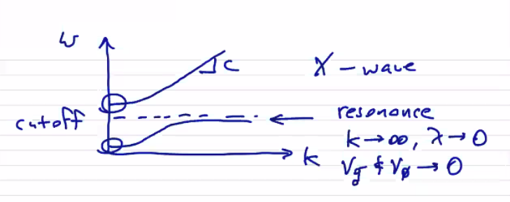

Restricting our multi-species fluid model to ions and electrons, what can we say about wave behavior in a magnetized 2-fluid plasma? Let's start with a cold plasma approximation (p=0) and neglect collisions. The momentum equation reduces to
mα(∂t∂vα+vα⋅∇vα)−qα(E+vα×B)=0
From here on out we can avoid some clutter (and wrist strain) by dropping the α subscripts and acknowledging that we have sets of equations for ions and electrons. Apply a perturbation to an equilibrium g=g0+g1
Let's now make the assumption that the perturbation is small, that is g1≪g0. That means that nonlinear products of perturbation terms are negligible (linearization process).
Now, assume that the equilibrium is a static equilibrium, that is v0=0. If we decompose into components that are parallel and perpendicular to the equilibrium magnetic field B0, then
∂t∂v1,∥−mqE1,∥=0
∂t∂v1,⊥−mq(E1,⊥+B0v1,⊥×z^)=0
The parallel component E1,∥ will lead us to the ordinary wave (O-wave). Consideration of the more general case with perpendicular components will lead to the X-wave.
The plasma velocity is related to the fields through the current density (Maxwell equations). Faraday's law gives
Since this is a linear system, assume that the perturbed quantities have a wave-like structure. That is, the perturbed quantities g1 are proportional to ei(ωt+k⋅r). This lets us transform the spatial and temporal derivatives into factors of ω and k
−ϵ0ω2E1=−μ01[k2E1−k(k⋅E1)]+iωen0v1
Let's now consider only high frequency oscillations, assuming that only the electrons respond and the ions remain stationary. There's nothing particularly complicated about including the ion response, this just lets us drop the α subscripts and focus on a single set of equations.
−iωϵ0en0v1=(ω2−c2k2)E1+c2k(k⋅E1)
Now let's apply the perturbed form to the linearized momentum equation
Combine the momentum equation and the Maxwell equations to eliminate E1 and v1
ϵ0me2n0E1,∥=(ω2−c2k2)E1,∥+c2k∥(k⋅E1)
Consider different possibilities for the k vector. If it is along the magnetic field k=k∥e^∥ (longitudinal wave) then
ϵ0me2n0=ω2−c2k2+c2k2=ωpe2
For k=k⊥e^⊥ (transverse wave) then we get the dispersion relation for the O-wave
dispersion relation for O-waves:ω2−c2k2=ωp2
The electric field is in the same direction as the magnetic field (E1=E1,∥), which means the O-wave is linearly polarized. At large k we just have regular light waves, but as we turn the frequency downwards we see a cut-off at the plasma frequency:

It turns out that the dispersion relation for the X-wave has the same cut-off, but also has another branch with a resonance

The two-fluid plasma model is highly reduced from the full kinetic model, but it is still too complete to be useful when studying gross plasma behavior. Further reductions of the model are possible by making asymptotic assumptions:
Low-frequency Asymptotic Assumption
Eliminate high frequency, short wavelength phenomena by using pre-Maxwell field equations. Formally, this is ϵ0→0.
The direct consequences of the low-frequency approximation are
c2=ϵ0μ01c→∞
ωp2=ϵ0mne2ωp→∞
λD=ωpvT→0
This means that all phenomena will have ω≪ωp, limiting the frequencies we can resolve to the ion plasma frequency. The characteristic speeds will be limited by the speed of light
kω≪c
and all characteristic lengths will be much greater than the Debye length
x0≫λD
Looking at Gauss' law,
ϵ0∇⋅E=α∑qαnα→α∑qαnα=0
so we now have charge neutrality everywhere in the domain. For H plasma, locally we have ne=ni everywhere.
Looking at Ampere's law,
ϵ0∂t∂E=μ01∇×B−α∑qαnαvα=0→j=μ01∇×B
Things we do not get from this approximation are E=0 or ∂t∂E=0. It does mean that plasma dynamics occur on a sufficiently large spatial scale that charge separation is small, and they occur on a sufficiently long temporal scale that electrons respond quickly.
Tiny electron asymptotic assumption
2nd approximation: neglect electron inertia in the momentum equation. Formally, we let the electron mass me→0
ωpe2=ϵ0mene2→∞
ωc,e=meeB→∞
vT,e→∞
The Larmor radius goes to zero
rl,e=ωc,evT,e→0
Importantly, as the gyroradius rl,e goes to 0 (because the thermal velocity goes as me and the cyclotron frequency goes as me), this means that the electrons are tied to the magnetic field.
The skin depth is also small.
δe=ωp,ec→0
So all phenomena that we capture must have ω≪ωp,e, ω≪ωc,e, and x0≫rL,e, x0≫δe .
The electron momentum equation becomes
∇Pe+∇⋅Πe+ene(E+v×B)=β=α∑Rαβ
The momentum equation is now a state equation, not an evolution equation. It now simply relates the dynamical variables to each other at any point in time.
Now, note that along magnetic field lines electrons can travel long distances at very fast (finite) speeds which can produce low frequency, long wavelength phenomena. Neglecting electron inertia implies that electrons respond instantaneously, meaning we cannot capture these modes. An example of such a phenomena is drift waves.
The characteristic speeds c and vT,e have disappeared from the model. Remaining is vT,i. This means that the ion dynamics dictate the plasma evolution.